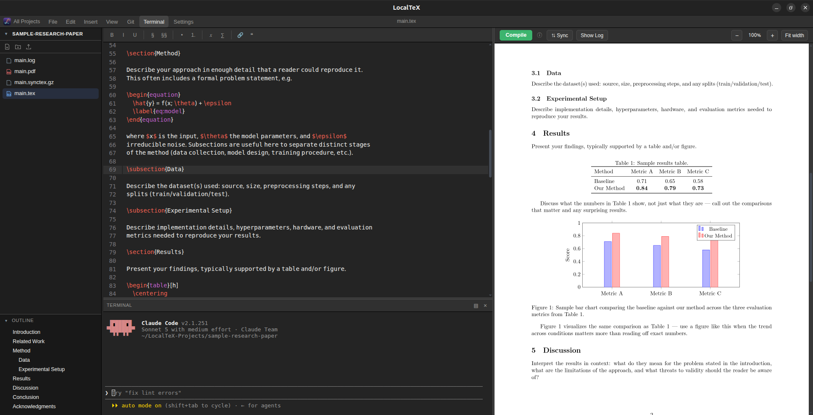

\documentclass{desktop-app}
Overleaf's editing experience, running entirely on your own machine.
A live LaTeX editor, a real compiler, and a real terminal — one window, no cloud, no account, no multi-gigabyte TeX Live install.

Why LocalTeX
Overleaf is great until you need it offline, want your files to actually live on your disk, or just don't want to pay for compile priority on your own laptop. LocalTeX gives you that same editor-plus-preview workflow, backed by a real filesystem and a real shell, with nothing running outside your machine.
Every project lives under ~/LocalTeX-Projects as plain files — .tex, .bib, images, whatever your document needs. Nothing is silently synced anywhere.
Features
Ten things it actually does, no marketing filler.
Multi-project dashboard
An Overleaf-style home screen listing every project under ~/LocalTeX-Projects, with search, new/delete, and .zip export/import.
Live editor
CodeMirror 6 with LaTeX syntax highlighting, autosave, undo/redo, find/replace, a symbol toolbar, and a document outline.
Real compiler
Tectonic — a self-contained LaTeX engine, so there's no multi-gigabyte TeX Live install. Errors surface inline.
SyncTeX
Click "Sync" to jump the PDF to your cursor's position; double-click the PDF to jump the editor back — both directions, pixel-accurate.
Real terminal
A genuine PTY-backed shell (node-pty), not a simulation. Dockable to the bottom or side, resizable.
PDF preview
Rendered with pdf.js at supersampled resolution for crisp text. Foldable, resizable split view, Ctrl+scroll zoom.
Project-wide search
A VS Code-style search panel — find text across every file in a project, not just the open one.
File tree
Overleaf-style sidebar — create, rename, drag-and-drop move, and delete via right-click or empty-space click.
Themes
VS Code Dark, Dracula, GNOME, and Light — covers the editor, terminal, and app chrome.
Multilingual documents
A bundled Bengali font plus a XeLaTeX + polyglossia starter template for mixing non-Latin scripts with Latin text.
Install
Debian/Ubuntu-based Linux (apt-based) and Windows 10/11 are supported.
-
Download and install the package
curl -fsSLO https://github.com/sayedshaun/localtex/releases/latest/download/localtex.deb sudo apt install ./localtex.deb -
Install Tectonic
Needed on
PATHto actually compile documents:curl -fsSL https://drop-sh.fullyjustified.net | sh
Launch LocalTeX from your application menu, or run localtex from a terminal.
-
Download and run the installer
Grab
localtex-setup.exefrom Releases and run it. -
Install Tectonic
Needed on
PATHto actually compile documents — grab the Windows build from the Tectonic install page.
.deb and .exe for each release are built and published automatically by a GitHub Actions workflow, so what you download always matches the tagged source.Uninstall
Linux
sudo apt remove localtexThis only removes the localtex package. It won't touch your ~/LocalTeX-Projects files or the standalone tectonic binary — remove those yourself if you no longer need them:
rm -rf ~/LocalTeX-Projects
rm -f ~/.local/bin/tectonicWindows
Uninstall LocalTeX from Windows Settings → Apps, same as any other app. It won't touch your LocalTeX-Projects folder or your Tectonic install.
Contributing
Issues and pull requests are welcome.
Development
npm install
npm run electron:devnpm install downloads the Electron runtime itself on first run (a prebuilt Chromium/Node binary, fetched from GitHub) — make sure you're online.
Requirements
Node.js 18+, build-essential (Linux build deps), and Tectonic on PATH. install.sh sets all of this up automatically.
Releasing
Pushing a tag matching v*.*.* triggers CI, which builds the .deb and .exe and attaches them to the release:
git tag v0.1.1
git push origin v0.1.1